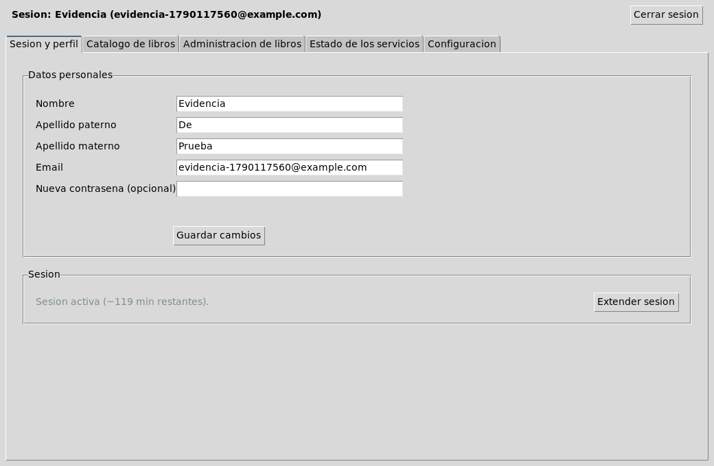
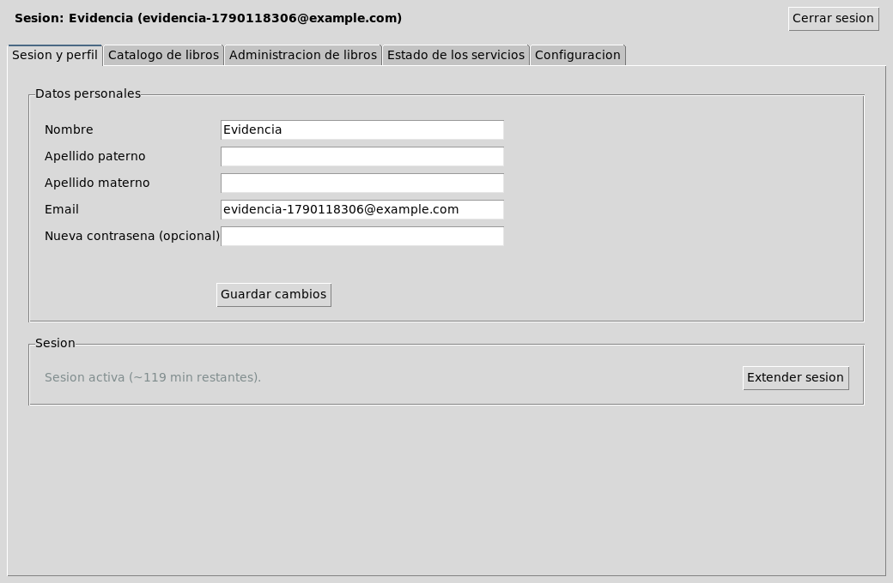
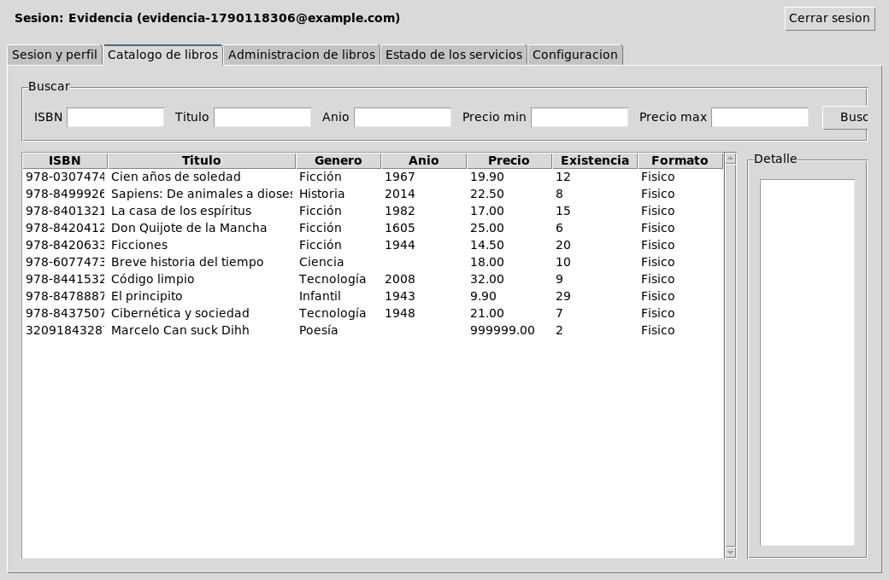
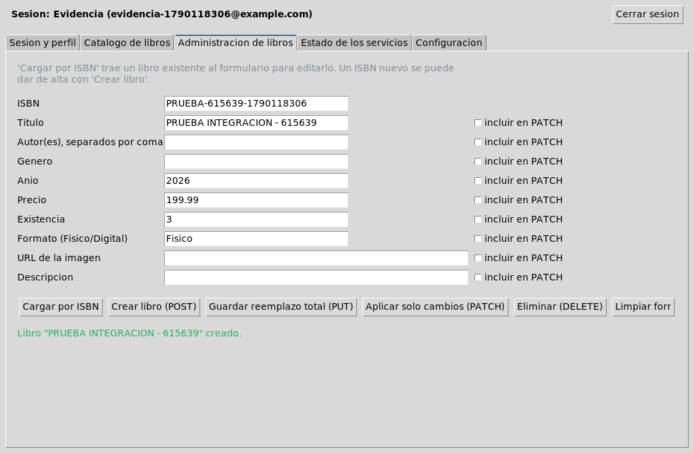
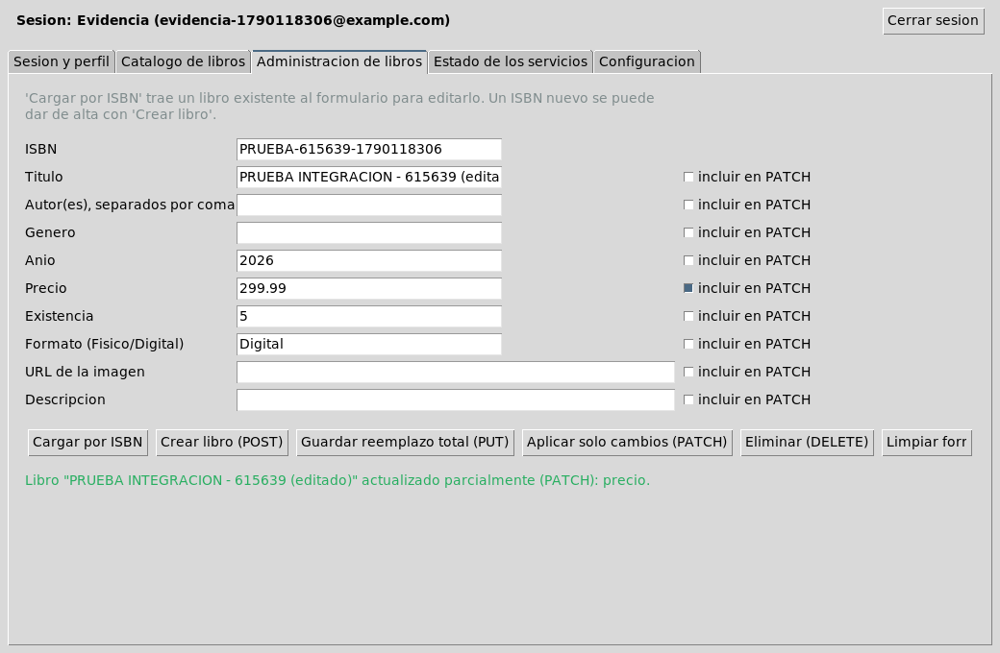
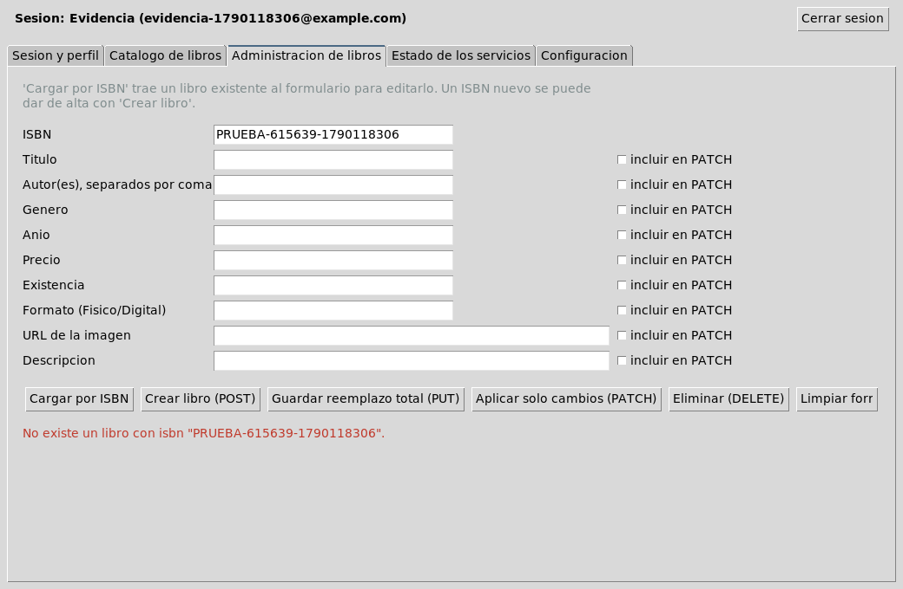
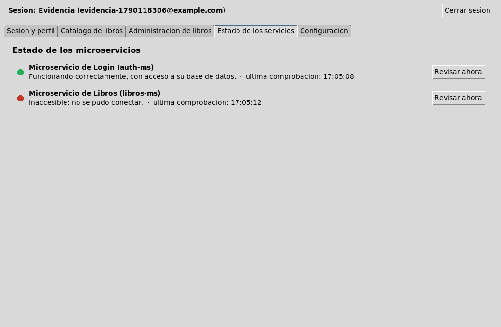
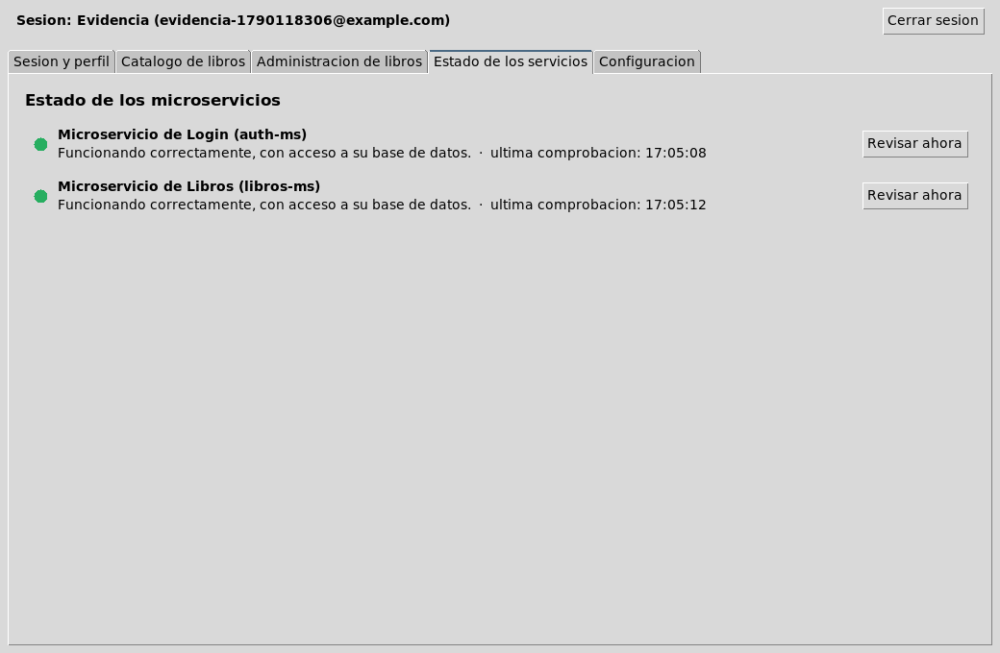

Reporte de actividad · 06
Un quinto microservicio no,
ahora toca el cliente.
Una aplicación de escritorio en Python (Tkinter/ttk, sin dependencias gráficas externas) que consume auth-ms (Ej. 05) y libros-ms (Ej. 04) exclusivamente por HTTP — sin ninguna conexión directa a PostgreSQL — con sesión persistente, semáforo de salud de ambos servicios, catálogo con búsqueda y CRUD completo de libros, y una pantalla de configuración que permite correr el mismo build contra los servicios locales o contra el despliegue público sin tocar código.
Objetivo y alcance
El enunciado pide un cliente de escritorio (Tkinter o PySide, en Python 3.10+) que consuma auth-ms y libros-ms solo por HTTP — nada de acceso directo a la base de datos desde el cliente. Debe cubrir, como mínimo: pantallas de registro/login/logout con verificación de cuenta y sesión persistida que se revalida contra el servidor; un panel principal con cinco áreas separadas (sesión y perfil, catálogo, administración de libros, estado de los servicios, configuración); un indicador de salud de tres estados para cada microservicio, con revisión periódica y manual; una prueba obligatoria de tolerancia a fallos (servicios arriba → libros-ms caído → libros-ms recuperado → URL/puerto incorrecto); navegación y búsqueda completas del catálogo; CRUD completo sobre /books demostrando la diferencia real entre PUT y PATCH; manejo de errores HTTP comprensible (nunca un traceback crudo); y una pantalla de configuración editable, probable, guardable y restaurable, para que el mismo build corra contra localhost o contra el despliegue público sin cambiar una sola línea de código.
Dentro del alcance: el cliente completo en apps/Python_app, más las ampliaciones a auth-ms y libros-ms que el enunciado exige y que ninguno de los dos tenía todavía (sección 03).
Fuera del alcance, a propósito: cualquier acceso directo del cliente a PostgreSQL — si un dato no está expuesto por un endpoint HTTP, el cliente simplemente no puede verlo ni tocarlo.
Arquitectura
El cliente es puro Python de biblioteca estándar más una sola dependencia externa (requests>=2.31,<3); Tkinter viene incluido con Python en Windows y Linux, así que no repite el problema de empaquetado que sí tuvo el cliente Electron del Ejercicio 04. Cada pantalla vive en su propio módulo bajo ui/, siguiendo exactamente el recorrido que pide el enunciado (GUI → configuración → comunicación HTTP → autenticación/sesión → libros → comprobación de servicios):
src/
├── main.py punto de entrada
├── config.py URLs de los microservicios, persistente
├── session_store.py token de sesión persistente en disco
├── api/
│ ├── http_utils.py wrapper HTTP compartido (timeouts, errores de conexión)
│ ├── auth_client.py cliente de auth-ms (login, registro, verify, perfil...)
│ └── libros_client.py cliente de libros-ms (parsea el XML del contrato)
└── ui/
├── app.py ventana raíz y controlador de navegación
├── pantalla_login.py autenticación
├── pantalla_registro.py alta de cuenta
├── pantalla_principal.py panel con las 5 pestañas
├── pantalla_perfil.py sesión y perfil del usuario
├── pantalla_catalogo.py búsqueda y detalle de libros
├── pantalla_administracion.py CRUD de libros (POST/PUT/PATCH/DELETE)
├── pantalla_estado.py semáforo de salud de ambos microservicios
└── pantalla_configuracion.py URLs de los microserviciosLa configuración y la sesión se guardan en ~/.libreria-client/ (o %APPDATA%\.libreria-client\ en Windows), fuera del directorio del código fuente, y por defecto apuntan a http://localhost:5002 (auth-ms) y http://localhost:5001 (libros-ms); la pestaña de Configuración permite probar, guardar y restaurar esos valores sin reiniciar la app, y guardar cierra la sesión activa a propósito — una sesión (cookie) solo es válida contra el servidor con el que se abrió.
Cómo se relaciona con ej02, ej03, ej04 y ej05
Es el primer ejercicio de la serie que no agrega un microservicio nuevo, sino un consumidor que se apoya en dos de los que ya existían — y que, al construirlo, forzó a ampliar ambos.
| Aspecto | Ej. 04 (libros-ms) | Ej. 05 (auth-ms) | Ej. 06 (cliente) |
|---|---|---|---|
| Rol | Microservicio REST/XML | Microservicio REST/XML+JSON | Consumidor de escritorio |
| Acceso a la base | Solo lectura de public + escritura acotada en libros/libro_autor | Lectura/escritura en su esquema auth | Ninguno — todo pasa por HTTP |
| Puerto local | 5001 | 5002 | — (proceso de escritorio, sin puerto propio) |
| Qué se le agregó para este ejercicio | CRUD de escritura completo en /books | /verify, /session/extend, PATCH /profile | — |
| Despliegue | deploy-iac/ejercicio-04/ | deploy-iac/ejercicio-05/ | deploy-iac/ejercicio-06/apps/Python_app (sin desplegar; corre en la máquina del usuario) |
La diferencia real de este ejercicio es que el trabajo de integración quedó del lado del consumidor: en vez de diseñar un esquema nuevo o un rol de PostgreSQL, hubo que descubrir dónde el contrato HTTP de los dos servicios existentes no alcanzaba lo que pedía el enunciado, y ampliarlos desde ahí — sección 04.
Decisiones de ingeniería
El catálogo solo se consume en XML, nunca ?format=json
- Necesidad
- El enunciado sugiere negociar formato con
?format=json, como enauth-ms. - Decisión
- El cliente parsea el XML real que ya devuelve
libros-ms(api/libros_client.py), igual que el cliente Electron del Ejercicio 04. - Justificación
libros-msnunca negoció JSON: ese parámetro en su contrato real es un filtro de negocio (formato físico/digital del libro), no una elección de representación. Cambiar su significado habría roto un contrato ya en uso.- Ventajas
- No se toca
libros-ms; se reutiliza el mismo criterio de parsing ya probado en el Ejercicio 04. - Limitaciones
- El cliente mantiene su propio parser XML en vez de usar el soporte JSON nativo de
requests.
Solo se muestra "Género", no "Categoría" por separado
- Necesidad
- Mostrar la clasificación de cada libro en el catálogo y en su detalle.
- Decisión
- Una sola etiqueta, "Género", con el valor real de
categorias. - Justificación
- El modelo de datos real solo tiene una clasificación; una etiqueta "Categoría" separada siempre estaría vacía.
- Ventajas
- La UI queda fiel al modelo real, sin campos fantasma.
- Limitaciones
- Si el contrato agregara algún día una taxonomía real distinta, habría que revisar esta pantalla.
auth-ms se amplió con verificación, extensión de sesión y perfil
- Necesidad
- El enunciado exige
GET /verify,POST /session/extendyPATCH /profile, que no existían en el Ejercicio 05. - Decisión
- Ampliar
auth-mscon las tres rutas, sobre el mismo esquemaauthya auditado. - Justificación
- Son comportamientos que necesitan estado del lado del servidor (token de verificación, expiración de sesión) — el cliente no puede simularlos solo con HTTP.
- Ventajas
- Reutiliza el mismo patrón de mínimo privilegio y de hashing ya verificado en el Ejercicio 05.
- Limitaciones
- Amplía el alcance original de ej05 después de su propia entrega — detalle completo en
ejercicio-05/README.mdyejercicio-05/sql/03_verificacion_email.sql.
libros-ms se amplió con CRUD de escritura sobre /books
- Necesidad
- El enunciado exige demostrar
POST/PUT/PATCH/DELETEreales sobre el catálogo, ylibros-mssolo tenía lectura. - Decisión
- Agregar las cuatro rutas de escritura, ampliando el rol
libros_ms_svcconINSERT/UPDATE/DELETEacotado únicamente alibrosylibro_autor. - Justificación
- Mismo patrón de mínimo privilegio de toda la serie: nunca dar permisos de escritura sobre
categorias,editorialesniautores. - Ventajas
- Valida el ciclo de vida completo de un libro de punta a punta, sin salirse del alcance declarado.
- Limitaciones
- Autor, género y editorial se resuelven por nombre exacto contra catálogos que deben preexistir — el cliente no puede crear catálogos nuevos; si el nombre no existe,
libros-msresponde422.
Bitácora de integración
Pruebas realizadas contra los microservicios reales (auth-ms en localhost:5002, libros-ms en localhost:5001, salvo donde se indica lo contrario) — sin mocks.
| # | Prueba | Acción realizada | Endpoint | Resultado HTTP | Resultado observado |
|---|---|---|---|---|---|
| 01 | Registro de usuario | Alta de cuenta nueva | POST /register | 201 | Cuenta creada con activo=false; correo de verificación entregado a Mailpit |
| 02 | Verificación de cuenta | Abrir el enlace del correo | GET /verify | 200 | activo=true; la cuenta ya puede autenticarse |
| 03 | Login con contraseña incorrecta | Intento de inicio de sesión con password mala | POST /login | 401 | "Email o contraseña incorrectos." (pantalla de login) |
| 04 | Login correcto | Inicio de sesión con las credenciales correctas | POST /login | 200 | Sesión iniciada, panel principal visible |
| 05 | Consultar sesión activa | Comprobación de sesión al abrir el panel | GET /session | 200 | autenticado=true con los datos del usuario |
| 06 | Extender sesión | Botón "Extender sesión" en la pestaña de perfil | POST /session/extend | 200 | duracion_segundos=7200; cuenta regresiva reiniciada |
| 07 | Editar perfil | Cambio de nombre desde la pestaña de perfil | PATCH /profile | 200 | Nombre actualizado y reflejado de inmediato en la barra superior |
| 08 | Estado de auth-ms | Revisión manual del semáforo | GET /health | 200 | status=ok → punto verde |
| 09 | Estado de libros-ms | Revisión manual del semáforo | GET /healthz | 200 | status=ok → punto verde |
| 10 | Consultar catálogo | Carga inicial de la pestaña Catálogo | GET /books | 200 | 10 libros listados con género, año, precio, existencia y formato |
| 11 | Búsqueda por título | Filtro de texto en la pestaña Catálogo | GET /books?title=... | 200 | Resultado filtrado a los libros que coinciden |
| 12 | Detalle de un libro | Selección de una fila en la tabla | GET /books/{isbn} (ya resuelto en el listado) | — | Panel de detalle con autor(es), género, precio, imagen y conceptos asociados |
| 13 | Alta de libro (evidencia individual) | Crear PRUEBA INTEGRACION - 615639 | POST /books | 201 | Libro creado y visible de inmediato en el catálogo |
| 14 | Reemplazo total | PUT con título/precio/existencia/formato nuevos, resto en blanco | PUT /books/{isbn} | 200 | Los campos opcionales que se dejaron vacíos quedaron NULL en el servidor (reemplazo real, no un parche disfrazado) |
| 15 | Actualización parcial | PATCH marcando solo la casilla de "precio" | PATCH /books/{isbn} | 200 | Solo el precio cambió; título/existencia/formato del paso anterior quedaron intactos |
| 16 | Alta con ISBN duplicado | Repetir POST con el mismo ISBN | POST /books | 409 | "Ya existe un libro con ese ISBN." |
| 17 | Consultar ISBN inexistente | "Cargar por ISBN" con un ISBN inventado | GET /books/{isbn} | 404 | "No existe un libro con isbn ..." |
| 18 | Eliminación de libro | DELETE tras confirmación | DELETE /books/{isbn} | 204 | Libro eliminado, catálogo refrescado |
| 19 | Confirmación final del ciclo | Volver a cargar el mismo ISBN tras eliminarlo | GET /books/{isbn} | 404 | Confirma que el ciclo POST→GET→PATCH→GET→DELETE→GET quedó completo y limpio |
| 20 | Microservicio de libros caído (Caso B) | Semáforo revisado contra un puerto cerrado | GET /healthz | sin respuesta (conexión rechazada) | Punto rojo, "Inaccesible: no se pudo conectar."; la app no se cae |
| 21 | Recuperación del servicio (Caso C) | Semáforo revisado de nuevo contra la URL real | GET /healthz | 200 | Punto vuelve a verde sin reiniciar la app |
| 22 | URL o puerto incorrecto (Caso D) | Apuntar libros-ms a un puerto cerrado desde Configuración | — | conexión rechazada | "no se pudo conectar a ..."; error manejado, sin traceback visible |
| 23 | Configuración: servidores locales | "Probar conexión" con las URL de localhost | GET /health, GET /healthz | 200 / 200 | Ambos servicios responden correctamente |
| 24 | Configuración: servidores remotos (túnel Cloudflare) | "Probar conexión" con https://auth.maxthecoder.online y https://libros.maxthecoder.online | GET /health, GET /healthz | sin respuesta / 200 | En el momento de la captura, libros-ms respondía por el túnel y auth-ms no — su hostname público todavía no estaba dado de alta en Cloudflare Zero Trust. Resuelto después (ver nota abajo). |
auth.maxthecoder.online no estaba dado de alta en el túnel — por eso la captura de configuración remota muestra auth-ms sin responder. Después de esa captura se agregó la ruta al ingress del túnel (http://auth-ms:8000) y el registro DNS correspondiente vía la API de Cloudflare; se confirmó que https://auth.maxthecoder.online/health ya responde 200 para clientes externos, verificado resolviendo contra 1.1.1.1 en vez del resolver del propio Pi. El Raspberry Pi donde corre esta sesión sigue tardando en verlo porque su resolver (Tailscale MagicDNS) cachea la respuesta negativa de antes de que el hostname existiera — el mismo comportamiento ya documentado en ejercicio-03/README.md ("Si el hostname no resuelve"). No afecta a la app corriendo en otra máquina: ahí el funcionamiento remoto contra ambos microservicios ya es de punta a punta.
Evidencia individual
El enunciado (sección 16) pide agregar temporalmente al catálogo un libro de prueba titulado PRUEBA INTEGRACION - <MATRÍCULA> y demostrar el ciclo completo POST → GET → PATCH → GET → DELETE → GET, eliminando el registro al terminar. Corresponde a las filas 13–19 de la bitácora de arriba, con la matrícula real del estudiante (615639).



GET /books, parseando el XML real de libros-ms.
POST /books: alta del libro de prueba con la matrícula real (PRUEBA INTEGRACION - 615639), con el mensaje de confirmación "Libro creado".
PATCH /books/{isbn}: solo la casilla "precio" marcada para incluir en el parche — el resto de los campos del libro quedan intactos.
GET /books/{isbn} tras el DELETE responde 404 — el registro de prueba quedó eliminado.
libros-ms detenido a propósito — semáforo en rojo, la app sigue respondiendo.
libros-ms, el semáforo vuelve a verde sin reiniciar la app.Problemas encontrados y soluciones
El bug más interesante apareció generando la evidencia, no durante el desarrollo del cliente. Al reiniciar la app con una sesión guardada y luego iniciar sesión de nuevo, requests lanzaba CookieConflictError por dos cookies auth_sid con dominio distinto en el mismo jar. Se reprodujo de forma aislada hasta encontrar que restaurar_token() sembraba la cookie guardada sin limpiar el jar primero:
- def token_actual(self) -> str | None:
- return self.sesion.cookies.get("auth_sid")
+ def token_actual(self) -> str | None:
+ # cookies.get() revienta con CookieConflictError si hay dos
+ # cookies "auth_sid" con distinto dominio en el mismo jar.
+ for cookie in self.sesion.cookies:
+ if cookie.name == "auth_sid":
+ return cookie.value
+ return None
def restaurar_token(self, token: str) -> None:
+ # Limpia el jar antes de sembrar el token guardado: evita que
+ # conviva con una cookie de un dominio distinto.
+ self.sesion.cookies.clear()
self.sesion.cookies.set("auth_sid", token)Otros límites conocidos, documentados en el README.md del cliente en vez de ocultarse:
| Limitación | Detalle |
|---|---|
| Tiempo de sesión mostrado | Es una estimación del lado del cliente, no un dato que devuelva el servidor — GET /session no incluye cuándo expira. Puede desincronizarse si el servidor cambia su duración por defecto. |
| Autor, género y editorial | Se resuelven por nombre exacto contra catálogos que deben preexistir; el cliente no puede crear catálogos nuevos. Si el nombre no existe, libros-ms responde 422. |
COOKIE_SECURE | Debe quedar en false en el .env de auth-ms para funcionar contra un endpoint http:// local; contra el despliegue público (siempre https://) no es un problema. |
Conclusiones
Este ejercicio invirtió el tipo de trabajo de la serie: en vez de diseñar un microservicio nuevo, el reto fue descubrir en dónde el contrato HTTP de dos servicios ya construidos no alcanzaba lo que un cliente real necesitaba — y ampliarlos desde ahí, sin romper a los consumidores que ya existían (el cliente Electron del Ejercicio 04 sigue funcionando exactamente igual contra libros-ms).
La prueba de tolerancia a fallos confirmó que la separación cliente/microservicio/base de datos funciona como se esperaba: cuando libros-ms deja de responder, la app no se cae — la capa HTTP atrapa el error de conexión y la pantalla de estado lo muestra en rojo, sin traceback. Consumir los servicios en local o por el túnel de Cloudflare se comportó igual desde el cliente; la diferencia real fue la latencia y, en un caso, un hostname público todavía no dado de alta (sección 05, prueba 24).
Uso de IA y prompts
Todo el ejercicio se desarrolló con Claude Code (Anthropic) en una sesión de terminal con acceso al Raspberry Pi, siguiendo el mismo patrón que los ejercicios 03, 04 y 05: primero exploró el cliente Electron del Ejercicio 04 y ambos microservicios para entender qué faltaba, después propuso el plan de ampliación de auth-ms/libros-ms y la estructura del cliente, y solo tras la aprobación del estudiante escribió el código.
| Prompt (resumido) | Qué produjo la IA | Qué se aceptó / modificó |
|---|---|---|
El enunciado de instructions.md, pidiendo un cliente Tkinter para auth-ms y libros-ms. |
Detectó que libros-ms no negociaba JSON y que auth-ms no tenía /verify, /session/extend ni PATCH /profile, y propuso ampliar ambos en vez de simular esos comportamientos en el cliente. |
Aceptado como base del plan. |
| Plan aprobado: construir el cliente, ampliar los dos microservicios, y generar la evidencia pedida por el enunciado (screenshots, bitácora, reflexión). | Escribió el cliente completo, las ampliaciones de auth-ms/libros-ms, un script (scripts/generar_evidencias.py) que corre la app real contra un display virtual (Xvfb) y captura las 20 pantallas pedidas por la sección 15 del enunciado, más un borrador de bitacora.md y reflexion.md a partir de lo realmente observado. |
Aceptado para el código y la bitácora (son hechos verificables); la reflexión quedó marcada explícitamente en el propio archivo como borrador a personalizar antes de la entrega — ver sección 10. |
| «Revisa el journal para ver qué ejercicios ya están documentados» — el ejercicio 06 no aparecía en ningún lado. | Encontró la evidencia ya generada pero sin commitear, la commiteó en deploy-iac, y redactó esta entrada del journal más la tarjeta y el contador de la portada — marcando explícitamente dos pendientes que encontró: la prueba 24 (hostname de auth-ms aún no dado de alta en Cloudflare) y la evidencia individual, que usaba una matrícula de marcador (000000) en vez de la real. |
Aceptado. Es este mismo reporte. |
Se dio de alta el hostname de auth-ms en Cloudflare y se regeneró la evidencia individual con la matrícula real. |
Actualizó esta entrada: la prueba 24 y la sección "Evidencia individual" ya reflejan el resultado resuelto, incluyendo la explicación de por qué la captura de configuración remota sigue en rojo desde este Pi específico (caché de DNS local, no una falla real). | Aceptado. Verificado contra las capturas actualizadas (matrícula 615639 visible en la 10 y en la 16) antes de dar el hallazgo por cerrado. |
Mismo patrón que en los ejercicios anteriores: nada se dio por probado hasta correr la app real contra los microservicios reales, con capturas de pantalla reales — no inventadas ni simuladas. El único punto que sigue documentado como "hay que revisar" es la reflexión personal (sección 10): es un borrador, no la redacción final del estudiante.
Reflexión personal
La parte más difícil no fue construir la interfaz, sino descubrir que el contrato entre cliente y microservicios no estaba completo del lado del servidor. Al escribir el cliente contra libros-ms esperando pedir ?format=json como decía el enunciado, encontré que ese parámetro ya significaba otra cosa en el servicio real (formato físico/digital del libro): nunca negoció JSON, siempre respondió XML. Identifiqué la causa leyendo el código fuente del microservicio, no por prueba y error, y la resolví parseando el XML real en el cliente en vez de forzar un cambio en un contrato ya en uso.
Encontré algo similar con auth-ms: el enunciado pedía GET /verify, POST /session/extend y PATCH /profile, que no existían. Tuve que extender el microservicio antes de terminar el cliente, agregando un token de verificación y separando "credenciales inválidas" de "cuenta sin verificar" como dos errores distintos (401 contra 403) — antes el servicio los trataba igual.
El bug más interesante apareció generando la evidencia, no durante el desarrollo: al reiniciar la app con una sesión guardada y luego iniciar sesión de nuevo, requests lanzaba CookieConflictError por dos cookies auth_sid con dominio distinto en el mismo jar. Lo reproduje de forma aislada hasta encontrar que restaurar_token() sembraba la cookie sin limpiar el jar primero, y lo corregí ahí.
Cuando el microservicio de libros deja de responder, la app no se cae: la capa HTTP atrapa el error de conexión y la pantalla de estado lo muestra en rojo, sin traceback. Consumir los servicios en local o por el túnel de Cloudflare se comportó igual desde el cliente — la diferencia real fue la latencia y, en un caso, un hostname público que aún no estaba dado de alta. Lo que más aprendí es que el cliente y el microservicio pueden estar "terminados" por separado y aun así no integrar bien si nadie prueba el camino completo end-to-end.